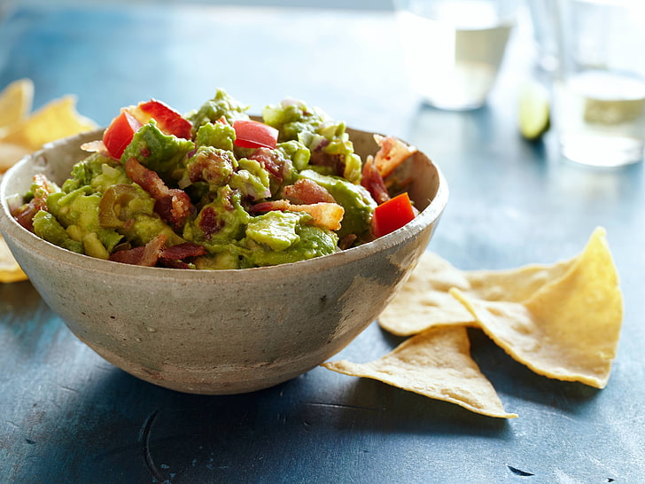

Tortilla jagung atau gandum diisi dengan daging (sapi, ayam, babi), sayuran segar, keju, dan saus salsa. Cara membuat: Panaskan tortilla, isi dengan daging cincang berbumbu yang telah dimasak, tambahkan irisan selada, tomat, keju parut, dan salsa segar.
Buritto
Tortilla gandum besar diisi dengan nasi, kacang, daging, keju, dan sayuran, kemudian digulung rapat. Cara membuat: Isi tortila dengan nasi berbumbu, kacang hitam atau merah, daging cincang, keju, dan guacamole lalu gulung hingga rapat dan panggang sebentar.
Chiles en Nogada
Cabai poblano diisi dengan campuran daging cincang, buah kering, dan bumbu; disiram saus krim kenari putih. Cara membuat: Goreng cabai poblano, isi dengan daging sapi dan buah kering berbumbu, tutup dengan saus kenari yang creamy, taburi biji delima.
Tamales
Adonan jagung kukus yang diisi dengan daging, sayuran atau saus, dibungkus daun jagung. Cara membuat: Buat adonan masa dari jagung, campur isian daging berempah, bungkus dengan daun jagung, lalu kukus hingga matang.
Quesadilla
Tortilla diisi keju dan bahan lain seperti daging atau sayuran, dipanggang hingga keju meleleh. Cara membuat: Letakkan keju dan topping di setengah tortilla, lipat dan panggang di wajan hingga keju meleleh dan tortilla renyah.
Enchilada
Tortilla diisi dengan daging atau keju, digulung dan disiram saus cabai merah, kemudian dipanggang. Cara membuat: Gulung tortila yang sudah diisi dengan daging atau keju, letakkan dalam loyang, siram saus cabai pedas, dan panggang hingga matang.
Pozole
Sup jagung hominy dengan daging babi atau ayam, disajikan dengan sayuran segar dan jeruk nipis. Cara membuat: Rebus daging dengan jagung hominy, bumbui, sajikan dengan kol cincang, radish, daun bawang, dan jeruk nipis.
Mole
Saus kaya bumbu dengan cokelat, cabai, rempah, disajikan dengan ayam atau kalkun. Cara membuat: Campur cabai kering, cokelat, biji wijen, rempah, masak hingga mengental, siram ke daging ayam panggang.
Fajitas
Irisan daging panggang dengan paprika dan bawang bombay, dihidangkan dengan tortilla. Cara membuat: Panggang daging sapi atau ayam dengan paprika dan bawang, sajikan dengan tortilla hangat dan topping seperti salsa dan krim asam.
Tostada
Tortilla jagung yang digoreng garing, diisi dengan kacang, daging, sayuran, keju, dan saus. Cara membuat: Goreng tortilla hingga garing, taburi dengan kacang refried, daging cincang, selada, tomat, keju, dan sedikit saus salsa.
Elote
Jagung rebus atau panggang dengan mentega, mayones, keju kwartjar, dan bubuk cabai. Cara membuat: Panggang jagung, oleskan mentega dan mayones, taburi keju putih dan bubuk cabai, sajikan dengan jeruk nipis.

Guacamole
Saus alpukat segar dicampur tomat, bawang, jeruk nipis, dan cabai. Cara membuat: Haluskan alpukat, campur dengan tomat cincang, bawang merah, cabai, perasan jeruk nipis, dan garam sesuai selera.
Nacho
Keripik jagung topping keju cair, daging cincang, jalapeños, dan sayuran segar. Cara membuat: Susun keripik jagung, taburi dengan keju leleh, daging cincang berbumbu, jalapeños, dan daun bawang, panggang sebentar dan sajikan hangat.